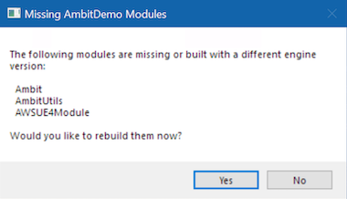

Appendix: Contributing to Ambit Development¶
This section provides important information for anyone who would like to contribute to the development of the Ambit tools or to make custom modifications to Ambit for their own purposes. It covers technical setup and developer workflow. For general contributing guidelines and process, see the repository's CONTRIBUTING file.
✏️ This guide assumes you already have Unreal Engine development experience.
Setup¶
Ensure you have completed the main Setup > Initial Setup (One-Time) instructions from this user guide.
In addition to having Unreal Engine 4.27 installed, you will also need the Microsoft Visual Studio development tools required for UE4 C++ development. If you need help with these setup steps, refer to the Unreal Engine 4 documentation, especially "Setting Up Visual Studio for Unreal Engine".
Create a new Unreal Engine C++ project to use as a host project while you work on Ambit development. The only configuration requirements for this project is that you designate it as a C++ project rather than a Blueprint project when prompted. Otherwise, you can keep all other project configuration settings at their defaults or change them to your liking.
Create a "Plugins" folder at the root of your UE project folder. Clone the Ambit repository into the "Plugins" folder. The result will look like this...
<your sample project>\Plugins\aws-ambit-scenario-designer-ue4\
Once the Ambit plugin repository has been cloned, right-click on the *.uproject file at the root of the project directory and select the "Generate Visual Studio project files" option. Select the appropriate engine version if required. A new Visual Studio solution file (*.sln) will be generated for you.
Launch your sample project by clicking on the *.uproject file. When prompted to rebuild missing modules, click "Yes".

Next, you'll need to enable some plugins to support running automated tests. Once the project opens, enable the following plugins:
- Functional Testing Editor
- Runtime Tests
- Editor Tests
Restart (or simply close) the editor for the plugins to take effect.
Development Workflow¶
Follow this workflow when making changes to the Ambit C++ code...
- Launch the project's
*.slnfile in Visual Studio. - In the Solution Explorer window, right-click on your project and select Set as Startup Project.
- Make your code edits.
- Compile and run the solution through either of these methods:
- To build only: Select
Build > Build Solutionfrom the Visual Studio menubar - To build and run: Press the Local Windows Debugger button (or press F5).
- To build only: Select
- Repeat steps 3-4 as needed.
Testing¶
Running Automated Tests¶
The Ambit plugin includes a number of automated tests. Automated test files, called "specs", end with a *.spec.cpp file extension and are usually located next to the files that they test. These tests will be automatically recognized by the Unreal Engine test runner. To run the tests:
- First open the Test Automation window (
Window > Test Automation). - Select the Automation tab.
- Tick the box next to the Ambit group of tests.
- Click the Start Tests button.
💡 Tip: For more info on working with automated tests in UE see "Automation Spec Overview"
Test Maps¶
A sample map is provided to aid in manual testing of the various Ambit spawner actors:
/Ambit Content/Test/Maps/ProceduralPlacementTestMap
A sample map is provided to aid in manual testing of the Environment FX actor:
Ambit Content/EnvironmentFX/TestMap/TestWeatherMap
Testing Scenario Import/Export¶
To manually test scenario import and export functionality, follow these steps:
- First set some random parameters in the Scenario Settings section of the Ambit Mode.
- Click the "Export Scenario" Button at the bottom of the Scenario Settings section and save the
*.sdf.jsonfile. - Verify the file was created in the destination location you specified.
- Reset all the values of your Scenario Settings section or re-load the project.
- Click the
...next to Scenario Name and import the*.sdf.jsonfile. - Confirm that all settings were restored as expected.
Packaging a Release Build¶
To create a packaged version of the plugin for distribution, follow these steps:
- Click the Edit tab and open Plugins window.
- Find the AWS Ambit Scenario Designer plugin.
- Click the Package button and choose the folder to which you would like to save the plugin.
- Wait for the packaging process to complete and use the Output Log panel to check for any warnings or errors.
You can use this pre-built plugin in both Unreal Engine C++ and Blueprint Projects by installing it in your project's "Plugins" folder or the Engine "Plugins" folder.
Contributing to the User Guide¶
To contribute to the User Guide, follow the instructions listed here.
Dependencies¶
The Ambit plugin uses a subset of the AWS SDK for C++ to communicate with AWS services. A precompiled version of these libraries (Version 1.9) has been included in this repository and encapsulated as a module called "AWSUE4Module".